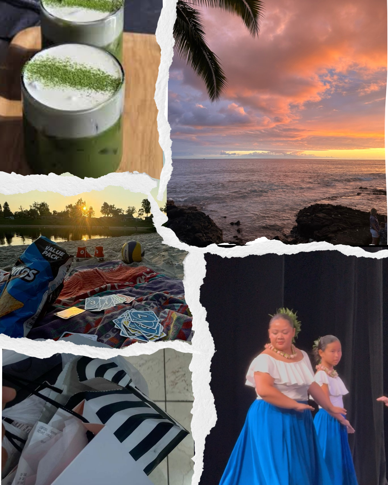

My name is Bella and I am a junior in high school in LA. I like to go to the beach, watch the sunsets, go shopping, hangout with friends, dance hula, and get matcha. These activities to me are relaxing and help me stay connected with other people and things I enjoy the most. The purpose of this portfolio is to show my growth and learning throughout this computer science course. It will highlight the projects and skills I have developed over time. I have learned to think more logically, solve problems, and use different coding techniques to create projects such as games and websites like this. At first, some topics felt confusing, but with some practice activities and experience, I became more confident in my abilities and more comfortable working with technology and coding/designing. Overall, this class has been an important part of my learning journey. It has taught me patience, persistence, and the importance of making sure everything as well organized and clear. I am proud of how much I have improved.
